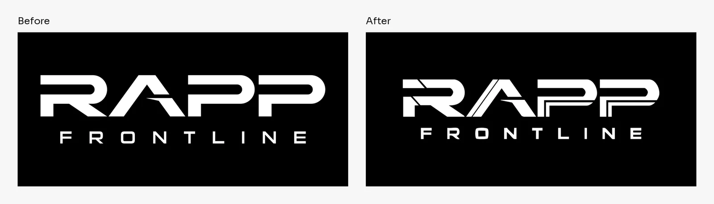
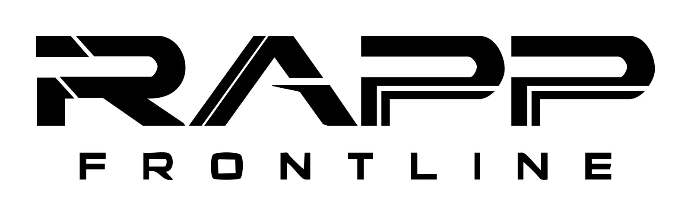
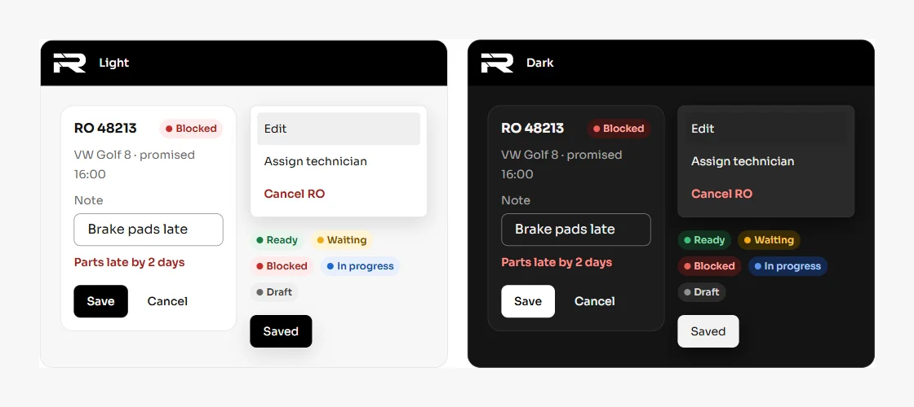
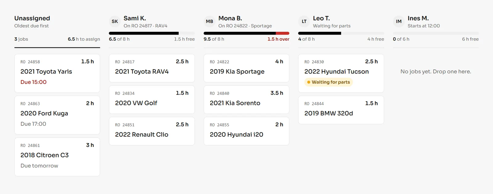

Freelance · dealership service platform
RAPP Frontline
A brand and design system for dealership service teams, built so their developers could ship from it directly, on a desktop, a workshop tablet and a phone.
- My role
- Product designer, freelance
- Timeline
- October 2026, 3 weeks
- Scope
- Logo, brand guidelines, design system
- Status
- Design system in final review

The problem
RAPP Frontline helps car dealerships run their service lane. A car comes in, a repair order opens, a technician gets the work, and used cars go through reconditioning until they are ready to sell. The client had a wordmark, but no brand rules and no design system. Their developers needed something they could build from directly, on a desktop in the office, on a tablet in the workshop and on a phone.
Where it stands
- 15
- Atoms
- 20
- Molecules
- 15
- Organisms
- 59
- Contrast pairs checked, light and dark
The logo and brand package is delivered. The design system is in final review: developers get one HTML file with the whole system, plus tokens.css and tokens.json. Next: test the recon board on a workshop tablet with technicians, and measure time to frontline before and after.
Evidence at a glance
- Status
- Logo and brand package delivered, design system in final review
- Team
- Designed alone, with the client deciding at each step; their developers build
- My role
- Logo, brand guidelines, design system, HTML documentation and coded tokens
- What is validated
- The client's pick at every step, 59 contrast pairs checked in light and dark, a visible keyboard focus on every clickable element
- What is not measured
- Usage and time to frontline: there is no usage data yet
What I delivered
- A refined logo and brand guidelines, handed off as a ready-to-use package: logo files, favicons, social and print examples.
- A design system built from scratch: foundations, 15 basic elements, 20 combined components and 15 full sections, in light and dark mode, delivered as HTML documentation and coded design tokens (the named colours and sizes developers use directly).
The logo: recognition over novelty
I started with research: competitors' marks and the references the client and I collected. I showed three new directions. The client liked one, then asked to see a version of the logo they already had. That told me what mattered most to them: recognition. So I redrew the existing wordmark instead of replacing it. Sharper cuts in the R and the A, a cleaner P, one cap line and one baseline, even spacing in FRONTLINE. The brand stays full black, with no supporting colours.

Three decisions that shaped the system
Colour named by its job, so dark mode came for free
The brand is black and white, but a product needs colour to mean something: ready, waiting, blocked. I kept a small functional set and named every colour by what it does: text/primary, bg/surface, bg/raised. Components only use those names. When the client asked for dark mode halfway through, no component changed. Each role got a dark value, and the build checks 59 contrast pairs in both themes.

Focus without the blue ring
The client did not want a blue outline. Removing focus would break the product for keyboard users, so focus became a 2 px line inside the element: black in light mode, white in dark. I checked every focusable element in the documentation: no outline anywhere, and every one still shows where you are.
No decoration that pretends to mean something
Early versions had coloured stripes on cards and a coloured icon on every notification. They looked designed but said nothing. I removed them. Severity is written as a word (Urgent, Recommended, Good), and colour only appears when something needs action.
Two components that do real work
Recon board
Every used car in reconditioning on one list: a five-step track, days in the step against the goal, the blocker in words, and one button to move the car to the next step, with Undo.

Technician workload
Unassigned jobs first, then one column per technician with hours booked against hours available. Drag a job onto a technician and both columns recalculate.

Who did what
| Research | Me |
|---|---|
| Logo directions and redraw | Me |
| Design system, documentation and tokens | Me |
| Choices and feedback | The client |
| Product build | The client's developers |
How I worked
Every change went through the same loop: look at how real products solve it, show three to five options, let the client pick, then build and check. Each options page is kept as the record of why a choice was made. I used AI-assisted code to turn the system into working HTML, so the client reviewed real interactions instead of static frames.